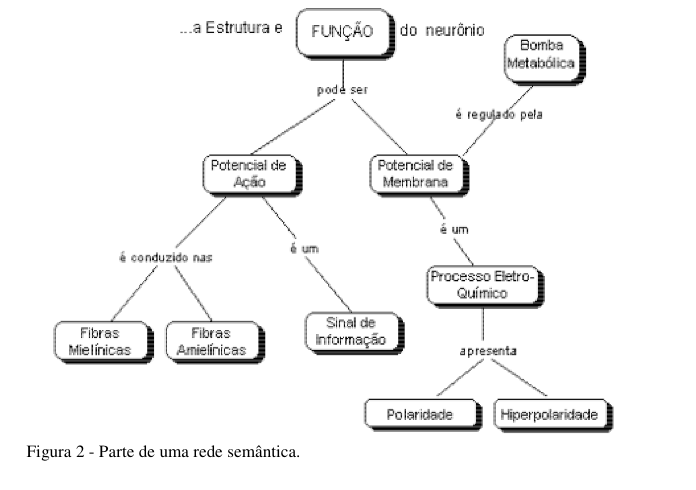
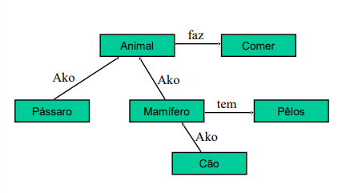
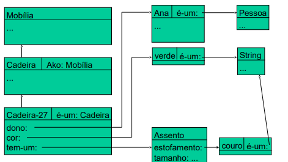
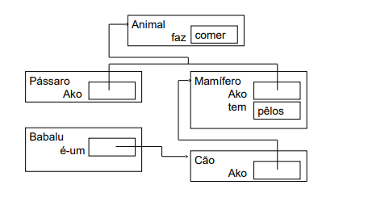
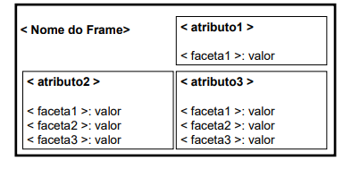
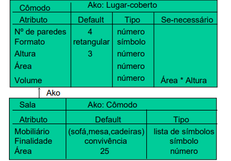
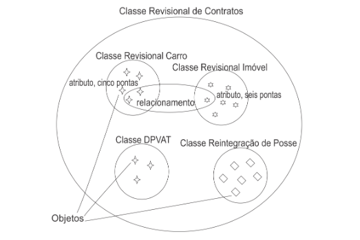

Representação de Conhecimento e Raciocínio
(Knowledge Representation and Reasoning)
Eduarda Salim, Rafaella Gonçalves, Sabrina Bloedow
Representação declarativa da informação:
Podemos entender como um modelo declarativo de representação da informação, uma simples proposição “O Canoas Shopping não tem Starbucks”. Esse modelo foi criado nos primórdios de IA por McCarthy. Como o objetivo era chegar o mais próximo de como um ser humano aprende e guarda informações, foi observado que a maior parte do conhecimento cotidiano das pessoas são afirmações e declarações, conforme o exemplo já citado mostra
Como ocorre na prática (representação declarativa):
Por fórmulas em lógica de predicado de primeira ordem:
Exemplo: “João comprou um carro”
Fatos declarativos simples normalmente podem ser representados como predicados instanciados. Sendo assim, a frase acima pode ser representada por “COMPRAR(João, carro)”. Já declarações mais complexas podem exigir representações também mais complexas.
Por meio de Frames:
Sendo eles um tipo de representação de conhecimento declarativo utilizado para ensinar inteligências artificiais também.
São estruturas em que todo o conhecimento sobre qualquer coisa, no mundo da computação denominada “objeto” ou “situação”, são armazenados juntos. Esse modelo de representação pode ser útil por facilitar o acesso à informação armazenada, justamente pela ideia do agrupamento de todas as informações sobre uma dada coisa, situação= objeto, evento.
Por Redes Semânticas:
Seguem a mesma ideia dos Frames, por agrupar as informações de um dado objeto/coisa, no entanto esse conjunto de informações é representado por nodos dentro de um grafo, e a relação entre os nodos existentes são os arcos que descrevem o motivo da relação basicamente, o que é aquela relação. Tanto as Redes semânticas quanto os frames, além de facilitar o acesso às informações também trazem a vantagem da possibilidade de chegar a uma resposta satisfatória sem ter sido fornecidas todas as informações necessárias, novamente pela ideia de deixar as informações de cada assunto agrupadas isso é possível.
No entanto, a representação declarativa da informação precisa de um outro programa junto dela para manipular os dados armazenados, ou seja, que especifique o que fazer com a informação e como fazer.
A abordagem procedimental do conhecimento:
Essa abordagem (procedimental), precisa de um interpretador/compilador para a traduzir, pois esse modelo de representação é aquele que junto do conhecimento há as informações contidas sobre o que fazer com aquele mesmo conhecimento/conteúdo. Ou seja, dentro das informações sobre uma dada coisa/objeto, também tem as informações sobre o que fazer com elas (sendo a própria manipulação dos dados).
Ou seja, o interpretador irá seguir as instruções fornecidas no próprio conhecimento.
A abordagem de conhecimento procedimental pode ser descrita também como um conjunto de passos, regras, etc. que visam solucionar um problema, chegar a uma resposta ou solução, (o que também pode ser descrito como um processo incremental).
A representação procedimental de um trecho de informação é essencialmente um plano para a sua utilização.
Na prática:
Esse tipo de conhecimento é representado por meio de árvores de decisão e regras.
Importante atentar-se ao tipo de linguagem utilizada para programar, pois quanto mais alto o nível da linguagem mais detalhistas as regras de manipulação dos dados deverão ser para o interpretador/compilador conseguir chegar no objetivo pretendido
Redes semânticas:
Uma rede semântica é uma junção de nodos, (os nodos, como já citado, são um conjunto de informações), eles possuem ligações entre si que representa a relação que há entre eles, e cada nodo abaixo descreve o significado ou conceito do nodo acima, ou anterior, como no exemplo abaixo:
A Rede S. por si só representa um conhecimento, pois é um agrupamento de informações = nodos, além disso possibilita a ligação com outros conceitos, partindo da ideia de que o ser humano aprende um conteúdo novo por criar relações com outros conteúdos já aprendidos.
Nesse sentido, há vários pesquisadores que afirmam diferentes terminologias e notação nos sistemas de representação do conhecimento por redes semânticas, mas existem pontos em comuns, os quais são os seguintes:
existem nós que representam entidades e links (predicados) que representam relacionamentos entre essas entidades;
cada link conecta um nó origem até um nó destino;
Normalmente, os nós e links denotam entidades de domínio específico, herdadas por carnívoros, felinos, gatos, etc.
Seguindo essa linha, as redes semânticas são a forma mais flexível e espontânea de expressar o conhecimento. Outro ponto importante, é que esses tipos de redes suportam herança de propriedades.
Logo, é válido mencionar que existem diferentes tipos de relações, sendo elas:
Ako (a-kind-of): relações entre classes.
É-um (is-a): relação entre classes e instâncias.
tem-um (has-a): identifica características ou atributos das entidades.
parte-de (part-of): identifica características ou atributos das entidades.
variados: identifica características gerais
Exemplo de busca em redes semânticas:
Fonte: UFPE, 2022
Portanto, podemos provar a declaração “Cães comem”, fazendo uma busca sobre a rede para comprovar a afirmação. Começamos buscando do nó “Cão”:
“Cão é-um mamífero”
“Mamífero é-um animal”
“Animal faz comer”
Isto é uma prova de que os ”Cães comem ”
Para usar todo o conhecimento sobre os “Cães”, pode-se ser feita uma busca em largura a partir do nó “Cão”:
“Cães são mamíferos”
“Cães têm pelos”
“Cães são Animais”
“Cães comem”
Podemos mencionar ainda vantagens sobre o uso de redes semânticas:
Tem representação visual tranquila de compreender;
Flexibilidade no uso de nós e links;
Economia de tempo nas buscas;
Faz semelhança ao senso comum humano.
Entretanto, assim como tem suas vantagens, há suas limitações:
Busca em redes extensas pode ser muito ineficiente;
Não tem homogeneidade na definição de nós e links;
Hereditariedade pode trazer dificuldades no tratamento de exceções;
Tem a chance de ter conflito entre características herdadas;
É complicado representar conhecimentos que precisam de sequência e lógica.
Frames:
Um frame é identificado por um nome e descreve um objeto complexo por meio de um conjunto de atributos.Já um sistema de frames é um conjunto de frames organizados por hierarquia.
Exemplo de sistema de Frames:
Fonte: UFPE, 2022
Cada Frame possui pelo menos dois atributos que são nome e Ako ou Is-a. Com o intuito de melhorar a hierarquia privilegiam dois tipos de relações:
ako: relação entre classe e sub-classe;
is-a: relação entre classe e instância.
Todo atributo aponta para outro frame ou para um tipo primitivo, como as strings. Outro ponto, é que cada atributo consiste em um conjunto de atributos de atributos.
Exemplo de classes e instâncias:
Fonte: UFPE, 2022
Ainda sobre frames há as Facetas que descrevem o conhecimento ou procedimentos relativos ao atributo. Sendo assim, elas tem as seguintes propriedades:
Valor: Dá especificações do único valor possível.
Valor Default: especifica o valor assumido pelo atributo, caso não haja nenhuma informação a esse respeito.
Tipo: aponta o tipo de dado do valor.
Domínio: descreve os valores possíveis para o atributo.
Procedimento Demons
Exemplo de representação básica de Frame:
Fonte: UFPE, 2022
Os Frames incorporam conhecimento declarativo dos objetos e eventos e conhecimento procedimental sobre como calcular valores ou restaurar informações.
Junto com o assunto em pauta há os Procedimentos Demons que são anexados aos Frames e disparados por consultas ou atualizações. Eles também podem inferir valores para atributos a partir de valores de outros atributos especificados anteriormente em qualquer frame do sistema.
Conceitos importantes sobre Procedimento Demons a serem destacados:
when-requested – quando o valor é pedido mas não existe ainda
when-read – quando valor é lido
when-written – quando valor é modificado
Exemplo de Procedimentos Demons:
Fonte: UFPE, 2022
Sobre as heranças de propriedades mencionadas ao longo do artigo, é importante mencionar que há três tipos de informações que podem ser herdadas:
valor (= POO)
procedimento (= POO)
valor default
E ainda existem dois tipos de herança:
Herança simples – existe uma única super-classe para cada classe.
Herança múltipla – uma classe pode ter mais de uma super-classe, podendo herdar propriedades ao longo de diversos caminhos diferentes (= o caos)
Nesse sentido, após a explicação das informações podemos concluir que a Representação de Conhecimento e Raciocínio é crucial na Inteligência Artificial, combinando diferentes abordagens para imitar o pensamento humano. A representação declarativa, exemplificada pela lógica de predicados, organiza informações em declarações simples, enquanto os frames agrupam conhecimento sobre objetos ou situações em estruturas organizadas, facilitando o acesso e a manipulação. Redes semânticas, por sua vez, conectam conceitos em grafos, permitindo inferências a partir de dados incompletos. A abordagem procedimental complementa essas representações ao incluir instruções sobre como manipular o conhecimento, utilizando árvores de decisão e regras. Juntas, essas técnicas fornecem uma base robusta para sistemas de IA, permitindo-lhes processar, inferir e aplicar informações de maneira eficiente e flexível.
Ontologias
Desde 1960, o termo ontologia tem sido utilizado para se referir à estrutura de conceitos representados por vocabulário lógico, indicando sua relação com a representação do conhecimento e sendo uma subárea da inteligência artificial. A aplicação da ontologia no desenvolvimento de sistemas de informação, dentro da engenharia de software, começou em 1980. Na década de 1990, surgiu o termo web semântica, representando um conjunto de tecnologias aplicadas à internet.
Considerando as atividades e os agentes envolvidos na tarefa de representar conhecimento, podemos entender o papel da ontologia em representação de conhecimento. Sistemas declarativos contêm afirmações que representam fatos governados por regras. Um exemplo de fato seria "Goiânia é uma cidade em Goiás" e uma regra seria "todas as pessoas que vivem em Goiânia vivem em Goiás". Essa combinação de fatos e regras compõe a base de conhecimento do sistema. A base de conhecimento é construída e mantida por um engenheiro do conhecimento, cuja tarefa é formalizar o conhecimento de um grupo de especialistas.
Observam-se dois significados principais para o termo ontologia em ciência da computação. O primeiro refere-se ao uso de princípios ontológicos para entender e modelar a realidade, alinhando-se ao seu papel original na filosofia, ou seja, fornecer uma descrição do que existe e caracterizar entidades nas atividades de modelagem. O segundo significado está relacionado à representação do domínio em linguagem de representação computacional. Nesse caso, a ontologia consiste em um conjunto de declarações expressas em uma linguagem de representação, que podem ser processadas por mecanismos de inferência automatizados. A ontologia define as regras de combinação entre os termos e seus relacionamentos, criados por especialistas, e os usuários formulam consultas utilizando os conceitos especificados.
É importante dizer que mesmo considerando o uso de princípios ontológicos na modelagem, nem sempre são tomadas decisões ontológicas para representar a realidade. Muitas vezes, as decisões são influenciadas por limitações de desempenho dos sistemas, resultando em representações que podem ser incoerentes com a realidade.
A ontologia é composta por indivíduos, classes, atributos e relacionamentos. Os indivíduos são os objetos, as classes são os conjuntos de indivíduos, os atributos são as características destes objetos e os relacionamentos são as formas como os objetos se relacionam. Esta classificação se aproxima da teoria dos conjuntos, utilizando exemplo do Judiciário.
Podemos classificar a ontologia como ontologia genérica, ontologia de domínio, ontologia de tarefas e ontologia de aplicação. A ontologia genérica cria as classes com conceitos diferentes e gerais, na maioria das vezes o relacionamento é
dificultado, visto as diferenças existentes. A ontologia de domínio é a mais utilizada, pois trata de forma específica determinadas situações, como ontologia de veículos e habitações. Já a ontologia de tarefas e de aplicação são iniciativas mais recentes,sendo que a de tarefa descreve o vocabulário de ações que precisam ser executadas, enquanto a de aplicação está relacionada aos trabalhos vinculados aos sistemas de informação. A ontologia genérica também é chamada de ontologia de alto-nível.
Referências
Bittencourt, Guilherme. Inteligência Artificial. Ferramentas e Teorias. UNICAMP, 1996, p. 163-170
Câmara, Marco Sérgio Andrade Leal. Inteligência Artificial: Representação do Conhecimento. Departamento de Engenharia Informática| Universidade de Coimbra, 2000. Disponível em: . Acesso em: 20 jun. 2024.
Jackson, Peter. Introduction to Expert Systems. Second Edition. Addison-Wesley Publishing Company, 1990, p. 206-216
Maida, Anthony S.. Encyclopedia of Artificial Intelligence. p. 493-507.
Redes Semânticas e Sistemas Frames. UFPE, 2022. Disponível em: . Acesso em: 26 jun. 2024.
Rich, Elaine; Knight, Kevin. Inteligência Artificial. Segunda Edição. Editora McGraw-Hill Ltda., 1993, p. 290-316
Russel, Stuart; Norvig, Peter. Artificial Intelligence. A Modern Approach. Prentice-Hall Inc., 1995, p. 316-327
Sowa, J.. Encyclopedia of Artificial Intelligence. p. 1011-1024.
Winston, Patrick Henry. Artificial Intelligence. Third Edition. Addison-Wesley Publishing Company, 1992, p. 179-209